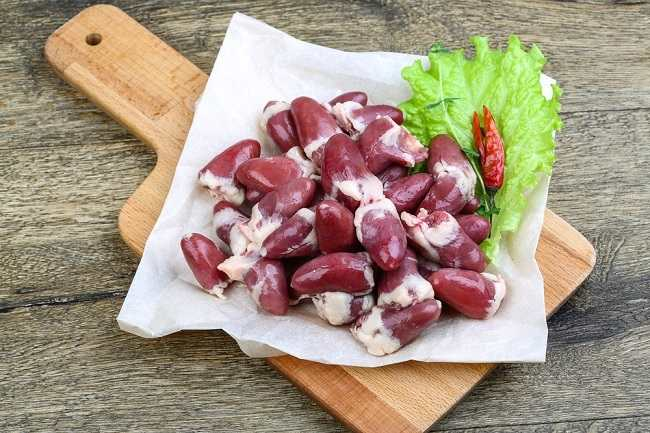

Jeroan adalah bagian-bagian dalam tubuh (hewan) yang sudah dijagal. Biasanya yang disebut jeroan adalah semua bagian kecuali otot dan tulang. Tergantung dari budaya setempat, berbagai bagian jeroan dapat dianggap sebagai sampah atau makanan mahal. Jeroan yang tidak digunakan secara langsung untuk konsumsi manusia atau binatang diproses lebih lanjut untuk menghasilkan makanan hewan, pupuk, atau bahan bakar.